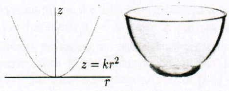
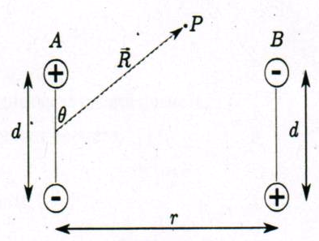
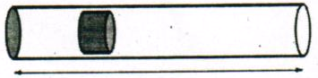

Задача 1. Механика
\begin{wrapfigure}{r}{0.55\textwidth} 
\end{wrapfigure}
Тяло се движи по вътрешната повърхност на гладка параболична купа, чието сечение се задава с уравнението $z = kr^2$. Тялото е поставено на височина $z_0$ от дъното на ккупата и има хоризонтална скорост $v_0$ успоредно на повърхността на купата. Земното ускорение е $g$.
а) За определена стойност на скоростта $v_0$, която ще отбележим с $v_h$, тялото се движи по хоризонтална окръжност. Намерете $v_h$. [2 т.]
б) Нека началната скорост е $v_0 > v_h$. Намерете максималната височина, до която достига тялото. [3 т.]
в) Приемете, че $z_0$ е достатъчно малко, така че движението може да се апроксимира с хармонично трептене. Намерете периода $T_0$ на движението. [3 т.]
г) Приемете, че $z_0$ не е малко. Сравнете периода $T$ на трептене с периода $T_0$ на хармоничното трептене от горното подусловие - ще бъде ли по-малък, по-голям или равен? Няма нужда да пресмятате експлицитната стойност за $T$. Достатъчно е да аргументирате отговора си. [2 т.]
Задача 2. Електричество
\begin{wrapfigure}{r}{0.40\textwidth} 
\end{wrapfigure}
Част 1
Електричният дипол се състои от два заряда с равна големина $q$ и противоположен знак, разделени на разстояние $d$ един от друг. Векторът на диполния момент има големина $p = qd$ и сочи по оста, свързваща $-q$ с $+q$. Разгледайте два идентични дипола, ориентирани както е показано на фигурата. Разстоянието между тях е $r$.
а) Намерете точен израз за потенциалната енергия на системата от два дипола, изразена чрез $q, d, r$ и фундаментални константи. За удобство приемете, че потенциалната енергия е нула, когато диполите са на безкрайно разстояние един от друг; [1 т.]
Във всички следващи подусловия приемете, че $d \ll r$.
б) Направете приближение на израза за потенциалната енергия като запазите само най-ниската степен на $d/r$. Напишете приближението чрез $p, r$ и фундаментални константи. [2 т.]
в) Намерете големината и посоката на силата, с която единият дипол действа на другия. Изразете силата чрез $p, r$ и фундаментални константи. [2 т.]
г) Намерете потенциала, създаден от дипола $A$ в точка $P$, изразен чрез векторите $\vec p$ и $\vec R$ и фундаментални константи. [2 т.]
Част 2
д) Сферична обвивка с вътрешен радиус $a$ и външен радиус $b$ е направена от материал със специфично съпротивление $\rho$. Точков заряд с големина $q_0$ е поставен в центъра на обвивката. В момента $t = 0$ обвивката е електрически неутрална, включително вътрешната и външната ѝ повърхност. Намерете заряда, разпределен върху външната повърхност на обвивката като функция на времето за $t \geq 0$. Игнорирайте всякакви магнитни ефекти. [3 т.]
Задача 3. Топлина
Част 1
Планета с радиус $R$ е съставена от равномерно разпределен материал, който чрез радиоактивен разпад отделя енергия с мощност $P$. Това води до зависимост на температурата от положението в планетата, тъй като има пренос на топлина отвътре-навън.
Коефициентът на топлопроводимост е мярка за скоростта на преноса на топлина в резултат от температурна разлика. Да разгледаме тънка пластина с площ $S$ и дебелина $\Delta x$, едната повърхност на която е с температура $\Delta T$ по-висока от другата. Нека през пластината да преминава топлина $\Delta Q$ за време $\Delta t$. Коефициентът на топлопроводимост се дефинира като $$ k = \frac{\Delta Q}{\Delta t} \frac{1}{S} \frac{\Delta x}{\Delta T}$$ Намерете:
а) Температурата $T_s$ на повърхността на планетата; [1 т.]
б) температурната разлика $\Delta T$ между температурите в центъра и на повърхността на планетата. [4 т.]
Приемете, че \begin{itemize} \item $k$ не зависи от положението в планетата, т.е. $k$ е еднаква за цялата планета; \item температурата зависи само от координатите, но не и от времето; \item планетата излъчва като абсолютно черно тяло; \item върху планетата не попада енергия от друг източник. \end{itemize}
Част 2
\begin{wrapfigure}{r}{0.40\textwidth} 
\end{wrapfigure}
Оръдие с форма на цилиндър с площ на напречното сечение $S$ изстрелва снаряд. Непосредствено след взрива снарядът е в покой, обемът между затворения край на тръбата и снаряда е $V_0$, а налягането на газа в този обем е $P_0$. Атмосферното налягане е $P_{atm}$, като $P_0 > P_{atm}$. Газът в цилиндъра е двуатомен, т.е. $C_V = 5R/2$, а $C_P = 7R/2$. Дължината на оръдието може да се изменя.
Намерете:
в) максималната възможна кинетична енергия $E_{\max}$, с която снарядът може да напусне оръдието; [4 т.]
г) дължината на оръдието $L$ в този случай. [1 т.]
Приемете, че \begin{itemize} \item снарядът се движи в цилиндъра достатъчно бързо, така че газът не получава топлина; \item триенето между снаряда и цилиндъра е пренебрежимо; \item около снаряда не преминава газ; \item върху вдясно от снаряда налягането е винаги $P_{atm}$. \end{itemize}